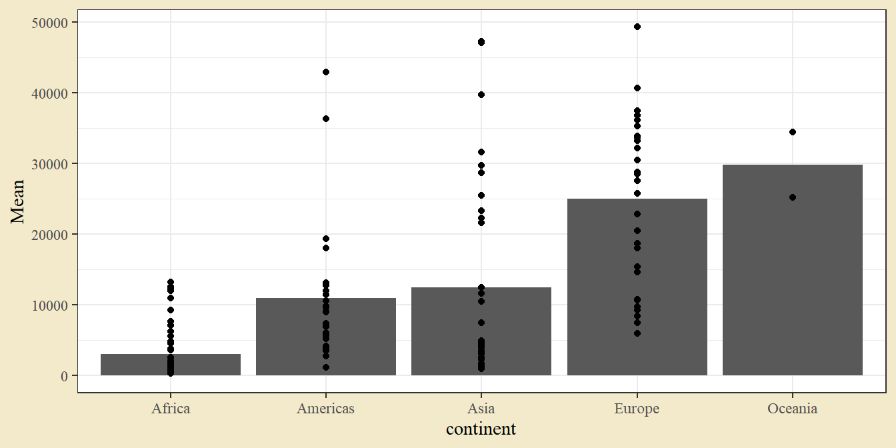
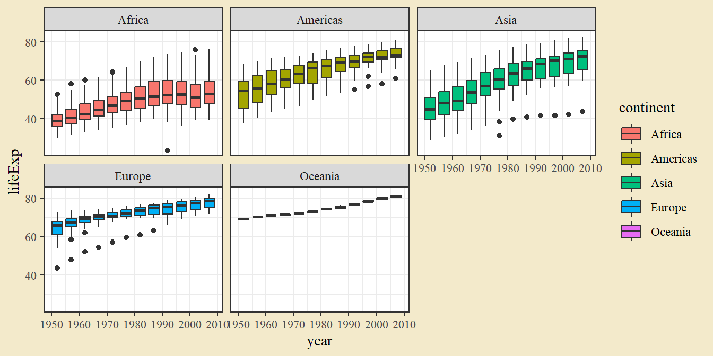

2 Datorövning 2. Beskrivande statistik
Datorövning 2 handlar om beräkning av beskrivande statistik i R. Efter övningen ska vi kunna
Importera data från en excelfil,
Beräkna lämpliga lägesmått för en variabel,
Beräkna lämpliga spridningsmått för en variabel,
Konstruera grafer som jämför två eller flera gruppers läge och spridning.
2.1 Repetition från datorövning 1
När man arbetar i R är det klokt att använda ett avancerat gränssnitt som RStudio och att skriva sin kod i ett separat skript. I RStudio kan man starta ett nytt skript genom Ctrl + Shift + N.
Mycket funktionalitet i R ligger i tilläggspaket (Packages). Paket måste installeras första gången de används och laddas varje session de används, t.ex.
# install.packages("tidyverse")
library(tidyverse) # Ger ett felmeddelande om paketet inte installerats tidigare.Data läses in med import-funktioner där valet av funktion beror på typen av fil. Importerad data sparas som ett objekt i R genom assign-pilen <-.
dat <- read_csv("https://raw.githubusercontent.com/adamflr/ST0060-2022/main/Data/Spotify_data.csv")
dat## # A tibble: 76,622 × 24
## artist_name album_name track_number track_name album_type album_release_d…
## <chr> <chr> <dbl> <chr> <chr> <chr>
## 1 100 gecs 1000 gecs an… 1 money mac… album 2020-07-10
## 2 100 gecs 1000 gecs an… 2 ringtone … album 2020-07-10
## 3 100 gecs 1000 gecs an… 3 745 stick… album 2020-07-10
## 4 100 gecs 1000 gecs an… 4 gec 2 Ü (… album 2020-07-10
## 5 100 gecs 1000 gecs an… 5 hand crus… album 2020-07-10
## 6 100 gecs 1000 gecs an… 6 800db clo… album 2020-07-10
## 7 100 gecs 1000 gecs an… 7 stupid ho… album 2020-07-10
## 8 100 gecs 1000 gecs an… 8 ringtone … album 2020-07-10
## 9 100 gecs 1000 gecs an… 9 xXXi_wud_… album 2020-07-10
## 10 100 gecs 1000 gecs an… 10 745 stick… album 2020-07-10
## # … with 76,612 more rows, and 18 more variables: album_release_year <dbl>,
## # danceability <dbl>, energy <dbl>, key <dbl>, loudness <dbl>, mode <dbl>,
## # speechiness <dbl>, acousticness <dbl>, instrumentalness <dbl>,
## # liveness <dbl>, valence <dbl>, tempo <dbl>, time_signature <dbl>,
## # explicit <lgl>, type <chr>, key_name <chr>, mode_name <chr>, key_mode <chr>Funktioner agerar på objekt och ger något utfall. Här beräknas medeltempot med funktionen mean(). Dollartecknet används för att ange en specifik kolumn i dataobjektet. Funktioner styrs av möjliga argument - här används na.rm för att ange att saknade värden inte ska tas med i beräkningen
mean(dat$tempo, na.rm = T)## [1] 119.0361Funktionerna filter() och select() kan användas för att välja kolumner och rader. Funktioner kan länkas samman med en pipe %>% för att skapa sekvenser av funktioner. Man kan tänka på pipen som och sen.
dat %>% # ta datan, och sen
filter(artist_name == "Tame Impala", tempo > 170) %>% # ta ut rader där artisten är Tame Impala och tempot är större än 170, och sen
select(artist_name, track_name, tempo) # ta ut kolumnerna artist_name, track_name och tempo## # A tibble: 8 × 3
## artist_name track_name tempo
## <chr> <chr> <dbl>
## 1 Tame Impala Lost In Yesterday 183.
## 2 Tame Impala Yes I'm Changing 180.
## 3 Tame Impala Led Zeppelin 184.
## 4 Tame Impala Borderline - Blood Orange Remix 174.
## 5 Tame Impala Guilty Conscience - Tame Impala Remix Extended 192.
## 6 Tame Impala Guilty Conscience - Tame Impala Remix 192.
## 7 Tame Impala Guilty Conscience - Tame Impala Remix Instrumental 192.
## 8 Tame Impala Guilty Conscience - Tame Impala Remix 192.Funktionen summarise() ger ett sammanfattande mått (som mean() för medelvärde eller sum() för summa) för någon eller några variabler. Funktionen group_by() kan användas för att göra beräkningen efter någon gruppering.
dat %>%
group_by(artist_name) %>%
summarise(Antal_spår = n(),
Medeltempo = mean(tempo),
Maxdansbarhet = max(danceability))## # A tibble: 363 × 4
## artist_name Antal_spår Medeltempo Maxdansbarhet
## <chr> <int> <dbl> <dbl>
## 1 100 gecs 50 135. 0.92
## 2 A Sunny Day In Glasgow 106 121. 0.63
## 3 A Tribe Called Quest 139 101. 0.954
## 4 A$AP Rocky 162 122. 0.945
## 5 Abe Vigoda 68 136. 0.57
## 6 Actress 206 118. 0.939
## 7 Adrianne Lenker 61 125. 0.758
## 8 Against All Logic 26 118. 0.92
## 9 Aldous Harding 80 111. 0.914
## 10 Alex G 179 122. 0.807
## # … with 353 more rowsSlutligen tittade vi på grafer med ggplot2-paketet. En ggplot byggs upp med tre grundelar: data, geometrier (grafens objekt och former), och aesthetics (utseende och placering av geometrierna). I ett enkelt spridningsdiagram är data två numeriska variabler, geometrierna är punkter, och punkternas placering ges av en x-koordinat och en y-koordinat. Ytterligare aesthetics kan vara punkternas färger (color) och storlek (size).
dat_small <- dat %>% filter(artist_name == "The Weeknd")
ggplot(dat_small, aes(tempo, danceability, size = valence, color = mode_name)) +
geom_point()
2.2 Import av data från en Excelfil
Inom vetenskapen är Excel, på gott och ont, det vanligaste filformatet för mindre datamängder. Till den här delen ska vi arbeta med data från Gapminder, en stiftelse som sprider information om socio-ekonomisk utveckling och global hälsa.
Uppgift 2.1 (Excelfil från Canvas) Hitta excelfilen Gapminder.xlsx på Canvas och ladda ner den. Hitta mappen som filen laddats ned till.
I R kan man läsa in data från en Excel-fil med funktionen read_excel() från paketet readxl. Som argument till funktionen sätts filens sökväg - dess placering på hårddisken. Stycket nedan importerar från en excelfil som ligger på hårddisken C: i mappen Downloads, under User_name, under Users.
library(readxl) # Ladda readxlgapminder <- read_excel("C:/Users/User_name/Downloads/Gapminder.xlsx")
gapminderUppgift 2.2 (Importera från excelfil) Var ligger den nedladdade filen Gapminder.xlsx? Gör lämplig ändring i koden ovan för att läsa in data från den filen. Notera att R använder högerlutande snedstreck /, så om en kopierad sökväg har vänster-snedstreck måste de ändras. Kontrollera att datan blivit korrekt inläst genom att köra objektnamnet gapminder.
En R-session har alltid en grundmapp, ett Working directory. Man kan se vilken mapp det är genom att köra
getwd()En filsökväg kan anges antingen som en fullständig sökväg, som ovan, eller relativt working directory. Om man till exempel har en fil Gapminder.xlsx som ligger i en mapp Data som i sin tur ligger i working directory, kan man importera data från filen med
gapminder <- read_excel("Data/Gapminder.xlsx")
gapminder## # A tibble: 1,704 × 6
## country continent year lifeExp pop gdpPercap
## <chr> <chr> <dbl> <dbl> <dbl> <dbl>
## 1 Afghanistan Asia 1952 28.8 8425333 779.
## 2 Afghanistan Asia 1957 30.3 9240934 821.
## 3 Afghanistan Asia 1962 32.0 10267083 853.
## 4 Afghanistan Asia 1967 34.0 11537966 836.
## 5 Afghanistan Asia 1972 36.1 13079460 740.
## 6 Afghanistan Asia 1977 38.4 14880372 786.
## 7 Afghanistan Asia 1982 39.9 12881816 978.
## 8 Afghanistan Asia 1987 40.8 13867957 852.
## 9 Afghanistan Asia 1992 41.7 16317921 649.
## 10 Afghanistan Asia 1997 41.8 22227415 635.
## # … with 1,694 more rowsUppgift 2.3 (Working directory) Identifiera working directory för din nuvarande Rs-session genom att köra getwd().
RStudio har också en inbyggd funktionalitet för att importera data. Man kan hitta den genom att gå till Environment-fliken och sedan Import Dataset. Det kan vara en bra hjälp, i synnerhet om man vill sätta datatyp för någon specifik kolumn.
Om du inte har tillgång till Canvas kan Gapminder-datan alternativt hämtas från paketet Gapminder.
# install.packages("gapminder")
library(gapminder)
gapminder2.3 Sammanfattande lägesmått
Den importerade datan ger medellivslängd, populationsstorlek och bnp per capita per land och år. Vi kan börja med att producera en bubbelgraf över datan - en av de presentationer Gapminder ofta använder. En bubbelgraf är ett spridningsdiagram där punktens storlek beror på en tredje variabel.
ggplot(gapminder, aes(gdpPercap, lifeExp, size = pop, color = continent)) +
geom_point() +
facet_wrap(~ year)
En interaktiv version kan vara bra om man vill identifiera någon punkt.
g <- ggplot(gapminder, aes(gdpPercap, lifeExp, size = pop, color = continent, text = country)) +
geom_point() +
facet_wrap(~ year)
library(plotly)
ggplotly(g)Under föreläsningen såg vi exempel på två lägesmått: medelvärdet (egentligen det aritmetiska medelvärdet) och medianen. De har bägge enkla funktioner i R: mean() respektive median(). Vi plockar ut en variabel ur datan och beräknar bägge.
gdpPercap <- gapminder$gdpPercap
mean(gdpPercap)## [1] 7215.327median(gdpPercap)## [1] 3531.847Samma sak kan göras med en pipe %>% och summarise().
gapminder %>%
summarise(Mean = mean(gdpPercap),
Median = median(gdpPercap))## # A tibble: 1 × 2
## Mean Median
## <dbl> <dbl>
## 1 7215. 3532.Uppgift 2.4 (Lägesmått av livslängd) Gör lämpliga ändringar i exemplet ovan för att beräkna lägesmått för medellivslängd (lifeExp).
Den andra lösningen, med en pipe och summarise(), kan enkelt utvecklas med ett group_by()-steg för att beräkna medel och median per någon grupp, t.ex. per år.
gapminder %>%
group_by(year) %>%
summarise(Mean = mean(gdpPercap),
Median = median(gdpPercap))## # A tibble: 12 × 3
## year Mean Median
## <dbl> <dbl> <dbl>
## 1 1952 3725. 1969.
## 2 1957 4299. 2173.
## 3 1962 4726. 2335.
## 4 1967 5484. 2678.
## 5 1972 6770. 3339.
## 6 1977 7313. 3799.
## 7 1982 7519. 4216.
## 8 1987 7901. 4280.
## 9 1992 8159. 4386.
## 10 1997 9090. 4782.
## 11 2002 9918. 5320.
## 12 2007 11680. 6124.Uppgift 2.5 (Lägesmått per kontinent) Gör lämpliga ändringar i exemplet ovan för att beräkna lägesmått per kontinent. Vad måste läggas till för att också beräkna maximum och minimum per kontinent (funktionerna max() och min())?
Uppgift 2.6 (Upprepade mätningar) Finns det några problem med att beräkna medelvärde per kontinent på den här datan? (Jag kan se minst två.)
I vetenskapliga publikationer redovisas medelvärden ofta med ett stapeldiagram. Som exempel ges staplar för medelvärdet av bnp per kontinent för 2007.
dat_gdp_2007 <- gapminder %>%
filter(year == 2007) %>%
group_by(continent) %>%
summarise(Mean = mean(gdpPercap))
ggplot(dat_gdp_2007, aes(continent, Mean)) +
geom_col()
För att få lite mer information kan man lägga till de individuella punkterna.
ggplot(dat_gdp_2007, aes(continent, Mean)) +
geom_col() +
geom_point(aes(continent, gdpPercap), data = gapminder %>% filter(year == 2007))
Eftersom geom_point() här bygger på annan data än kolumnerna från geom_col() anger vi en ny aes()-funktionen och sätter argumentet data. Det kan också vara informativt att använda geom_text() för länderna. Etiketterna sätts med argumentet label i aes(). (Om man oroar sig för överlappande etiketter och letar efter lite överkurs kan man titta på paketet ggrepel.)
ggplot(dat_gdp_2007, aes(continent, Mean)) +
geom_col() +
geom_text(aes(continent, gdpPercap, label = country), data = gapminder %>% filter(year == 2007), size = 2)Uppgift 2.7 (Graf för livslängd) Gör om stapeldiagrammet. Denna gång med livslängd (lifeExp) istället för bnp per capita (gdpPercap).
2.4 Sammanfattande spridningsmått
Under föreläsningarna såg vi några mått på spridning: varians, standardavvikelse och kvartilavstånd (IQR, inter-quartile range). De har alla motsvarande funktioner i R (var(), sd(), och IQR()) som kan användas på samma sätt som funktionerna för lägesmått.
gdpPercap <- gapminder$gdpPercap
var(gdpPercap)## [1] 97169410sd(gdpPercap)## [1] 9857.455IQR(gdpPercap)## [1] 8123.402Alternativt med en pipe och summarise().
gapminder %>%
summarise(Varians = var(gdpPercap),
Standardavvikelse = sd(gdpPercap),
Kvartilavstånd = IQR(gdpPercap))## # A tibble: 1 × 3
## Varians Standardavvikelse Kvartilavstånd
## <dbl> <dbl> <dbl>
## 1 97169410. 9857. 8123.Lösningen med pipe och summarise() kan som tidigare utvecklas med group_by().
gapminder %>%
group_by(year) %>%
summarise(Varians = var(gdpPercap),
Standardavvikelse = sd(gdpPercap),
Kvartilavstånd = IQR(gdpPercap))## # A tibble: 12 × 4
## year Varians Standardavvikelse Kvartilavstånd
## <dbl> <dbl> <dbl> <dbl>
## 1 1952 86882249. 9321. 3049.
## 2 1957 97410232. 9870. 3946.
## 3 1962 75123173. 8667. 4650.
## 4 1967 65534132. 8095. 5925.
## 5 1972 112665135. 10614. 8252.
## 6 1977 69931225. 8362. 9847.
## 7 1982 59812359. 7734. 10985.
## 8 1987 68695607. 8288. 10667.
## 9 1992 81574244. 9032. 9414.
## 10 1997 103459275. 10171. 10656.
## 11 2002 124414278. 11154. 11950.
## 12 2007 165377988. 12860. 16384.Uppgift 2.8 (Graf för livslängd) Gör lämpliga ändringar i det sista exempel för att istället beräkna spridningsmått för livslängd.
Vi avslutar med tre vanliga illustrationer av vetenskaplig data - ett linjediagram med felstaplar, ett stapeldiagram med felstaplar, och ett lådagram. För linjediagrammet beräknar vi medelvärdet och spridningsmått för bnp över år och kontinent. Som spridningsmått använder vi medelfelet, vilket beräknas som standardavvikelse delat på roten ur antalet observationer.
dat_sum <- gapminder %>%
group_by(year, continent) %>%
summarise(Mean = mean(gdpPercap),
SE = sd(gdpPercap) / sqrt(n()))
dat_sum## # A tibble: 60 × 4
## # Groups: year [12]
## year continent Mean SE
## <dbl> <chr> <dbl> <dbl>
## 1 1952 Africa 1253. 136.
## 2 1952 Americas 4079. 600.
## 3 1952 Asia 5195. 3244.
## 4 1952 Europe 5661. 569.
## 5 1952 Oceania 10298. 258.
## 6 1957 Africa 1385. 157.
## 7 1957 Americas 4616. 662.
## 8 1957 Asia 5788. 3396.
## 9 1957 Europe 6963. 671.
## 10 1957 Oceania 11599. 649.
## # … with 50 more rowsMed ggplot2 kan vi bygga ett linjediagram med geom_line() och lägga till felstaplar med geom_errorbar(). Den senare behöver aes()-argument för ymin och ymax - nedre och övre del av felstapeln. Vi sätter dem till medelvärdet minus respektive plus ett medelfel.
ggplot(dat_sum, aes(year, Mean, color = continent)) +
geom_line() +
geom_errorbar(aes(ymin = Mean - SE, ymax = Mean + SE))
Uppgift 2.9 (Bredd) Felstaplarna från geom_errorbar() har väldigt breda ändar. Använd hjälpsidan för geomet ?geom_errorbar, i synnerhet exemplen längst ned, och se om det går att ändra bredden.
En graf med staplar och felstaplar kan konstrueras på ett likande sätt. Följande exempel visar staplar över livslängd per kontinent. Felstapeln ges av standardavvikelsen.
dat_sum <- gapminder %>%
filter(year == 2007) %>%
group_by(continent) %>%
summarise(Mean = mean(lifeExp),
SD = sd(lifeExp))
dat_sum## # A tibble: 5 × 3
## continent Mean SD
## <chr> <dbl> <dbl>
## 1 Africa 54.8 9.63
## 2 Americas 73.6 4.44
## 3 Asia 70.7 7.96
## 4 Europe 77.6 2.98
## 5 Oceania 80.7 0.729Vi bygger en ggplot med geom_col() och geom_errorbar(). Felstapels konstruktion kan anges i en notis med funktionen labs().
ggplot(dat_sum, aes(continent, Mean, fill = continent)) +
geom_col()+
geom_errorbar(aes(ymin = Mean - SD, ymax = Mean + SD)) +
labs(title = "Average life expectancy by continent, 2007",
caption = "Errorbars given by mean +/- standard deviation.
Source: Gapminder")
Uppgift 2.10 (Staplar för 1982) Gör lämpliga ändringar i exempel ovan för att konstruera ett stapeldiagram med felstaplar för året 1982 och variabeln gdpPercap.
Ett lådagram anger fördelningen av en variabel genom att illustrera minimum, maximum och kvartiler. Kvartiler är mått som delar en datamängd i fyra lika stora delar (så att en fjärdedel ligger under första kvartilen, en fjärdedel mellan första och andra kvartil, och så vidare). Med ggplot2 kan vi bygga ett lådagram med geom_boxplot(). Exempel ger en låda per år och kontinent.
ggplot(gapminder, aes(year, lifeExp, fill = continent, group = year)) +
geom_boxplot() +
facet_wrap(~ continent)
Uppgift 2.11 (Group-argumentet) I lådagrammet används argumentet group. Vad gör det? Vad händer om man tar bort det?
2.5 Ordna upp beskrivande statistik och exportera
Efter att ha beräknat någon beskrivande statistik kan det vara bra att titta på hur resultaten kan snyggas upp och exporteras i något lämpligt format. Ta den tabell med medelvärden vi producerade i ett tidigare exempel.
dat_sum <- gapminder %>%
filter(year == 2007) %>%
group_by(continent) %>%
summarise(Mean = mean(lifeExp),
SD = sd(lifeExp))
dat_sum## # A tibble: 5 × 3
## continent Mean SD
## <chr> <dbl> <dbl>
## 1 Africa 54.8 9.63
## 2 Americas 73.6 4.44
## 3 Asia 70.7 7.96
## 4 Europe 77.6 2.98
## 5 Oceania 80.7 0.729Ett vanligt skrivsätt för medelvärde och standardavvikelse är som m ± sd. Vi kan använda funktionen paste() för att slå ihop kolumner till en sammanhängande text.
dat_sum %>%
mutate(mean_plus_minus_sd = paste(Mean, "±", SD))## # A tibble: 5 × 4
## continent Mean SD mean_plus_minus_sd
## <chr> <dbl> <dbl> <chr>
## 1 Africa 54.8 9.63 54.8060384615385 ± 9.63078067196179
## 2 Americas 73.6 4.44 73.60812 ± 4.44094763085538
## 3 Asia 70.7 7.96 70.7284848484849 ± 7.96372447069057
## 4 Europe 77.6 2.98 77.6486 ± 2.9798126601609
## 5 Oceania 80.7 0.729 80.7195 ± 0.729027091403335Vi måste avrunda medelvärdet och standardavvikelsen först. Det kan man göra med round(), vars argument är den variabel man vill avrunda och antalet decimaler man vill avrunda till.
dat_sum <- dat_sum %>%
mutate(mean_plus_minus_sd = paste(round(Mean, 1), "±", round(SD, 1)))Uppgift 2.12 (Tappade nollor) Utfallet ovan är nära men inte heller riktigt vad som behövs. I de fall där funktionen avrundat till en nolla har decimal tappats. Hur kan man visa en avslutande nolla? Följande tråd på StackOverflow besvarar samma fråga.
https://stackoverflow.com/questions/42105336/how-to-round-a-number-and-make-it-show-zeros
Försök använda kod därifrån för att lägga till en avslutande nolla.
Objekt kan exporteras från R på liknande som det importeras - med särskilda exportfunktioner (write-funktioner) beroende på filtyp. För att exportera till en csv-fil man man anvnäda write_csv(). Ingående argument är det objekt man vill exportera och den fil man vill exportera till. R ger ingen varning om man skriver över en existerande fil, så var lite försiktiga här.
Precis som vid import använda R working directory om inget annat anges. Följande exporterar objektet dat_sum till en csv-fil Exporterad data från R.csv i working directory.
getwd()
write_csv(dat_sum, "Exporterad data från R.csv")Därifrån skulle man kunna öppna filen i något kalkylprogram, snygga till layouten, och sedan klippa in i ett textdokument.
2.6 Stegvis beräkning av varians
Det vara nyttigt att göra en stegvis beräkning av varians (och standardavvikelse) för att få en lite bättre förståelse av vad det faktiskt beskriver. Nedan ges en slumpmässig exempeldata med fem observationer. Om du har en tärning från datorövning 1 kan du med fördel kasta den nu, och ersätta värdena med dina egna utfall
dat <- data.frame(Rad = c(1,2,3,4,5), x = c(6,3,2,3,5))
dat## Rad x
## 1 1 6
## 2 2 3
## 3 3 2
## 4 4 3
## 5 5 5En variansberäkning har följande steg,
- beräkna medelvärdet,
- beräkna utfallet minus medelvärdet för varje observation,
- ta differenserna i kvadrat,
- summera kvadraterna,
- dela summan med antalet observationer minus ett.
Vi har tidigare sett beräkningen av medelvärden med mean(). En skillnad mot tidigare är att vi gör det i ett mutate() steg istället för summarise(), eftersom vi vill ha kvar den tidigare strukturen med flera rader.
dat <- dat %>%
mutate(Medelvärde = mean(x))
dat## Rad x Medelvärde
## 1 1 6 3.8
## 2 2 3 3.8
## 3 3 2 3.8
## 4 4 3 3.8
## 5 5 5 3.8Därefter tar vi differensen mellan observationernas värden och medelvärdet.
dat <- dat %>%
mutate(Differenser = x - Medelvärde)
dat## Rad x Medelvärde Differenser
## 1 1 6 3.8 2.2
## 2 2 3 3.8 -0.8
## 3 3 2 3.8 -1.8
## 4 4 3 3.8 -0.8
## 5 5 5 3.8 1.2Därefter tar vi kvadrater av differenserna. För att ange en kvadrat används symbolen ^2, t.ex. 3^2 för tre i kvadrat.
dat <- dat %>%
mutate(Kvadrater = Differenser^2)
dat## Rad x Medelvärde Differenser Kvadrater
## 1 1 6 3.8 2.2 4.84
## 2 2 3 3.8 -0.8 0.64
## 3 3 2 3.8 -1.8 3.24
## 4 4 3 3.8 -0.8 0.64
## 5 5 5 3.8 1.2 1.44Först i nästa steg summerar vi kvadraterna.
dat_sum <- dat %>%
summarise(Kvadratsumma = sum(Kvadrater))
dat_sum## Kvadratsumma
## 1 10.8Som avslutande steg delar vi kvadratsumman med antalet observationer minus ett. För fem observationer delar vi alltså med fyra.
dat_sum %>% mutate(Varians = Kvadratsumma / 4)## Kvadratsumma Varians
## 1 10.8 2.7Vi kan se om vi fått rätt genom att beräkna variansen med funktionen var().
var(dat$x) # Dollartecken för att ta ut kolumnen x i objektet dat## [1] 2.72.7 Kumulativt medelvärde
Om man har data som av någon anledning samlas in i sekvens kan det vara intressant att beräkna och illustrera den med ett kumulativt medelvärde. En serie med kumulativa medelvärden beräknas genom att för varje nytt värde ta medelvärden av de värden man hittills samlat in - vid tio värden tar man medelvärdet av de tio, vid elva värden medelvärdet av de elva, och så vidare.
Med de tärningsvärden vi hade innan kan vi beräkna ett kumulativt medelvärde genom att först beräkna summan med cumsum() och sedan dela på antalet kast. För att förenkla beräkningen av antalen tar vi fram sekvensen med antal kast i ett mutate()-steg.
dat_dice <- data.frame(Utfall = c(6,3,2,3,5)) %>%
mutate(Kast = 1:n())
dat_dice## Utfall Kast
## 1 6 1
## 2 3 2
## 3 2 3
## 4 3 4
## 5 5 5dat_dice <- dat_dice %>%
mutate(`Kumulativ summa` = cumsum(Utfall),
`Kumulativt medelvärde` = `Kumulativ summa` / Kast)
dat_dice## Utfall Kast Kumulativ summa Kumulativt medelvärde
## 1 6 1 6 6.000000
## 2 3 2 9 4.500000
## 3 2 3 11 3.666667
## 4 3 4 14 3.500000
## 5 5 5 19 3.800000Om beräkning inte är uppenbar här, ta någon minut för att förstå den.
Uppgift 2.13 (Kumulativt medelvärde) Vad ska läggas till för att stycket nedan ska ge en linjegraf över medelvärdet?
ggplot(dat_dice, aes(x = Kast, y = ___)) +
___()Uppgift 2.14 (Fler tärningskast) Kasta din tärning ytterligare några gånger, gärna på en mjuk yta. Fyll i dina utfall och gör grafen från föregående uppgift. Kan man se en tendens för medelvärdet att minska i varians vid fler kast?
dat_dice <- data.frame(Utfall = c(___)) %>%
mutate(Kast = 1:n(),
`Kumulativ summa` = cumsum(Utfall),
`Kumulativt medelvärde` = `Kumulativ summa` / Kast)
dat_diceUppgift 2.15 (Kumulativ frekvens) Om man vill titta på andelen gånger ett visst utfall inträffat talar man om kumulativ frekvens snarare än kumulativt medelvärde. Använd stycket nedan för att titta på andelen gånger utfallet varit en etta (ett positivt utfall, i begreppets kliniska mening). Om ett inte är ett möjligt utfall på din tärning, ändra ettan till något mer lämpligt.
dat_dice <- data.frame(Utfall = c(___)) %>%
mutate(Kast = 1:n(),
`Positivt utfall` = Utfall == 1,
`Kumulativt antal` = cumsum(`Positivt utfall`),
`Kumulativ frekvens` = `Kumulativt antal` / Kast)
dat_dice
ggplot(dat_dice, aes(x = Kast, y = `Kumulativ frekvens`)) +
geom_line()2.8 Darwin-exempel
På kursen Canvas-sida finns en excelfil Uppgiftdata.xlsx som innehåller data för de flesta räkneupgifter på kursen. I den här delen ska vi titta på datan i fliken Darwin som innehåller en jämförelse i planthöjd mellan kors- och självbefruktade plantor.
Uppgift 2.16 (Ladda ner uppgiftsdata) Ladda ner filen med uppgiftsdata till din lokala hårddisk.
Vi såg tidigare hur en excelfil kan läsas in med read_excel(). Ett argument den funktionen kan ta är sheet, som styr vilken flik som ska läsas in. Som tidigare måste man ange var på datorn excel-filen ligger.
Uppgift 2.17 (Läs in Darwin-datan) Gör lämpliga ändringar i koden nedan för att läsa in fliken Darwin.
dat_darwin <- read_excel("Data/Uppgiftsdata.xlsx", sheet = "Darwin")
dat_darwin %>% print(n = 30)## # A tibble: 30 × 3
## ID Metod Utfall
## <dbl> <chr> <dbl>
## 1 1 Självbefruktade 17.4
## 2 2 Självbefruktade 20.4
## 3 3 Självbefruktade 20
## 4 4 Självbefruktade 20
## 5 5 Självbefruktade 18.4
## 6 6 Självbefruktade 18.6
## 7 7 Självbefruktade 18.6
## 8 8 Självbefruktade 15.3
## 9 9 Självbefruktade 16.5
## 10 10 Självbefruktade 18
## 11 11 Självbefruktade 16.3
## 12 12 Självbefruktade 18
## 13 13 Självbefruktade 12.8
## 14 14 Självbefruktade 15.5
## 15 15 Självbefruktade 18
## 16 16 Korsbefruktade 23.5
## 17 17 Korsbefruktade 12
## 18 18 Korsbefruktade 21
## 19 19 Korsbefruktade 22
## 20 20 Korsbefruktade 19.1
## 21 21 Korsbefruktade 21.5
## 22 22 Korsbefruktade 22.1
## 23 23 Korsbefruktade 20.4
## 24 24 Korsbefruktade 18.3
## 25 25 Korsbefruktade 21.6
## 26 26 Korsbefruktade 23.3
## 27 27 Korsbefruktade 21
## 28 28 Korsbefruktade 22.1
## 29 29 Korsbefruktade 23
## 30 30 Korsbefruktade 12När data är inläst kan man sammanfatta den med medelvärde, standardavvikelse och medelfel (där medelfelet ges av standardavvikelsen delad på roten ur antalet observationer).
Uppgift 2.18 (Sammanfatta Darwin-datan) Fyll i koden nedan för att beräkna medelvärde, standardavvikelse, antal observationer och medelfel. Gör beräkningen per grupp (Metod)
dat_sum <- dat_darwin %>%
group_by(___) %>%
summarise(Medelvärde = mean(___),
Standardavvikelse = ___(Utfall),
`Antal observationer` = n(),
Medelfel = Standardavvikelse / sqrt(`Antal observationer`))
dat_sumSlutligen kan vi presentera de sammanfattande måtten med en lämplig graf. Ett vanligt val är ett stapeldiagram med felstaplar för medelfelen.
Uppgift 2.19 (Illustrera Darwin-datan) Fyll i koden nedan för att skapa ett stapeldiagram med felstaplar av de sammanfattande måtten i objektet som skapades i uppgiften ovan. Felstaplarna styrs med argumenten ymin och ymax. Dess ska sättas till medelvärdet minus ett medelfel respektive medelvärdet plus ett medelfel. Välj lämpliga värden för staplarnas bredd. Välj en lämplig färg för staplarnas kant och inre del. Se colors() för en lista över färger, eller använd hex-koder som "#ff00ff".
ggplot(dat_sum, aes(Metod, Medelvärde)) +
geom_col(color = ___, fill = ___, width = ___) +
geom_errorbar(aes(ymin = ___ - ___, ymax = ___ + ___),
width = ___) +
labs(caption = "Felstapel anger medelvärde ± ett medelfel")Ett annat alternativ för en graf ett lådagram per grupp. Här används den ursprungliga datan, snarare än beräknad beskrivande statistik.
Uppgift 2.20 (Illustrera Darwin-datan) Fyll i koden nedan för att skapa ett lådagram för de två metoderna. Låt x-axeln ange planthöjden (Utfall) och y-axeln metoden (Metod). Även här kan man styra färger och bredd med color, fill och width.
ggplot(dat_darwin, aes(x = ___, y = ___)) +
geom_boxplot(color = "purple", fill = "hotpink", width = 0.2)Funktionen quantile() kan användas för att beräkna kvartiler. Notera att man första måste dela per grupp.
dat_darwin_kors <- dat_darwin %>% filter(Metod == "Korsbefruktade")
quantile(dat_darwin_kors$Utfall)## 0% 25% 50% 75% 100%
## 12.00 19.75 21.50 22.10 23.50dat_darwin_själv <- dat_darwin %>% filter(Metod == "Självbefruktade")
quantile(dat_darwin_själv$Utfall)## 0% 25% 50% 75% 100%
## 12.8 16.4 18.0 18.6 20.4Vad är kopplingen mellan kvantilerna och lådagrammet?
2.9 Bonus. Tredimensionella grafer med plotly
Förra gången anvnäde vi paketet plotly för att göra en interaktiv graf. Paketet har också funktioner för 3d-grafer. Börja med att ladda paketet.
library(plotly)Vi börjar med ett enkelt exempel på en 3d-graf med lite skapad data.
dat_ex <- data.frame(Var1 = c(1,2,3), Var2 = c(3,1,2), Var3 = c(2,3,1), Type = c("A", "B", "C"))
dat_ex
plot_ly(dat_ex, x = ~Var1, y = ~Var2, z = ~Var3, color = ~Type) %>%
add_markers()Om grafen inte kommer upp direkt kan det fungera att trycka på den lilla ikonen med ett fönster och en pil i Viewer-fliken. Grafen ska då öppnas i en webbläsare.
Syntaxen till plot_ly() är inte helt olik ggplot(). Först anges datan, därefter argument för x- y-, och z-koordinater. Notera tilde-tecknet ~ före variabelnamnen. Eventuell färg sätts med color. Efter det lägger man till punkter (här markers) med en pipe in i add_markers(). Vi vill göra en liknande graf med gapminder-datan, men får börja med att filtrera på ett visst år.
Uppgift 2.21 (Filtrera för år) Vad måste läggas till i funktionen nedan för att filtrera för data där året är 2007?
dat_2007 <- gapminder %>%
___(year == ___)Vi kan nu konstruera en 3d-graf med datan.
Uppgift 2.22 (Gapminder i 3d) Vad måste läggas till i funktionen nedan för en 3d-graf med befolkningsmängd (pop) på x-axeln, livslängd (lifeExp) på y-axeln, bnp per capita (gdpPercap) på z-axeln, och färg efter kontinent (continent)? För att kunna identifiera specifika länder kan man också sätta argumentet text.
plot_ly(___, x = ~___, y = ~___, z = ~___, color = ~___, text = ~country) %>%
add_markers()Uppgift 2.23 (Log-transformationer) Inom statistiken är det vanligt att transformera variabler för att ta bort extremeffekter och visa på specifika dataegenskaper. En vanlig transform är att logaritmera ett värde, vilket innebär att man istället för att använda det ursprungliga värdet använder exponenten i någon bas (ofta basen tio). Ta till exempel värdet 10000, dess tio-logaritm är 4, eftersom 10 upphöjt i 4 är 10000. Logaritmer är vanliga vid data med extremvärden.
Grafen i uppgiften ovan präglas mycket av skillnader i bnp och befolkningsstorlek. Testa att tio-logaritmera variablerna och se om det blir en mer eller mindre överskådlig graf. Logaritmen kan göras genom att byta den ursprungliga variabeln mot en variabel transformerad med log10(). Fyll i stycket nedan.
plot_ly(___, x = ~log10(___), y = ~log10(___), z = ~___, color = ~___, text = ~country) %>%
add_markers()Uppgift 2.24 (Följa ett land) Likt en ggplot kan man lägga till graf-element. Här använder man dock en pipe för lägga till ett nytt element. Fyll i kodstycket nedan. Vad, om något, har lagts till i grafen?
plot_ly(___, x = ~log10(___), y = ~log10(___), z = ~___, color = ~___, text = ~country) %>%
add_markers() %>%
add_lines(data = gapminder %>% filter(country == "Costa Rica"))Uppgift 2.25 (Spotify 3d) Som avslutning återvänder vi till spotify-datan från datorövning 1. Fyll i stycket nedan för att skapa en graf med tempo, dansbarhet och valens (tempo, danceability, valence) på axlarna, storlek efter energi (energy) och text efter spårnamn (track_name). Filtrera på valfri artist. Använd unique(dat_spot$artist_name) för att se tillgängliga artister.
dat_spot <- read_csv("https://raw.githubusercontent.com/adamflr/ST0060-2022/main/Data/Spotify_data.csv")
dat_small <- dat_spot %>% filter(artist_name == "Weyes Blood")
plot_ly(dat_small, x = ~___, y = ~___, z = ~___, size = ~___, text = ~___) %>%
add_markers()2.10 Valfria hemuppgifter
Uppgift 2.26 (TidyTuesday) TidyTuesday är ett R-kopplat pedagogiskt projekt som varje vecka publicerar ett nytt dataset och utmanar allmänheten att skapa bästa möjliga visualisering av data. Resultaten publiceras vanligen på Twitter med #TidyTuesday. På sidan https://github.com/rfordatascience/tidytuesday/tree/master/data/2022 finns en tabell med dataset publicerade under 2022. Gå igenom listan, hitta ett intressant fall och läs informationen om det (genom att klicka på länken). Är det möjligt att förstå beskrivningen av datan?
Uppgift 2.27 (r/dataisbeautiful) Gå till reddit-sidan dataisbeautiful. Välj en graf som verkar tydlig eller vacker eller intressant. Försök förstå den i termer av data (vilken information ligger bakom grafen), geometrier (vilka geometriska former är synliga i grafen, punkter, linjer, staplar), och estetik (vilka datavariabler styr hur geometrin ser ut och var den är placerad).
Uppgift 2.28 (More or Less: Behind the Stats) BBC Radio har ett program om statistik, se https://www.bbc.co.uk/programmes/p02nrss1. Lyssna på ett avsnitt. Sammanfatta det i haiku-form.
Uppgift 2.29 (gganimate) Med paketet gganimate (https://gganimate.com/) kan man göra animationer av ggplot-grafer. Installera paketet med install.packages("gganimate") och försök köra de exempel som ges på hemsidan.
Uppgift 2.30 (Skumma ett paper) Hitta en vetenskaplig artikel i valfri tidskrift. Vilka läges- och spridningsmått kan du hitta? Vilka grafer?